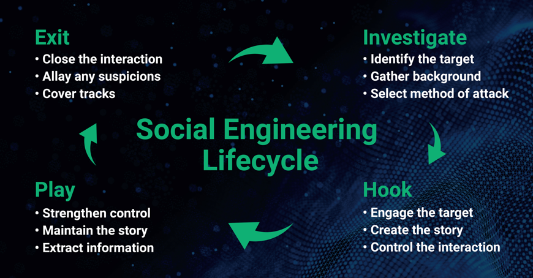

Social Engineering Attacks
Social engineering attacks happen in one or more steps. A perpetrator first investigates the intended victim to gather necessary background information, such as potential points of entry and weak security protocols, needed to proceed with the attack. Then, the attacker moves to gain the victim’s trust and provide stimuli for subsequent actions that break security practices, such as revealing sensitive information or granting access to critical resources.
Social Engineering Attack Lifecycle
